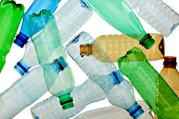

How Plastics-to-Fuel Can Become the Next Green Machine
We all know plastics deliver many benefits that make modern life possible. They help keep our foods fresher longer, reduce the weight of our cars so we use less fuel, insulate our homes so we use less energy, and keep countless medical supplies safe and sterile. While some plastics are recycled, far too many are not — and end up buried in landfills or littered where they can enter delicate marine ecosystems.
But new technologies that can harness the fuel content in non-recycled plastics could help remedy this. These technologies work as part of an integrated approach to managing waste geared toward creating value from trash — an approach dubbed sustainable materials management.
Getting fuel from used plastics
A new set of emerging technologies is helping to convert non-recycled plastics into an array of fuels, crude oil and industrial feedstocks. Processes vary, but these technologies, known as "plastics-to-fuel," involve similar steps.
-
Plastics are collected and sorted for recycling. Then the non-recycled plastics (or residuals) are shipped to a plastics-to-fuel facility, where they are heated in an oxygen-free environment, melted and vaporized into gases. The gases are then cooled and condensed into a variety of useful products. Plastics-to-fuel technologies do not involve combustion.
-
Depending on the specific technology, products can include synthetic crude or refined fuels for home heating; ingredients for diesel, gasoline or kerosene; or fuel for industrial combined heat and power.
-
Companies sell the petroleum products to manufacturers and industrial users, while fuels can help power cars, buses, ships and planes.
Economics will likely drive adoption of this technology. For example, by tapping the potential of non-recycled plastics, the U.S. could support up to 600 plastics-to-fuel facilities and generate nearly 39,000 jobs, resulting in nearly $9 billion in economic output from plastics-to-fuel operations. And that doesn't even include the $18 billion of economic output during the build-out phase.